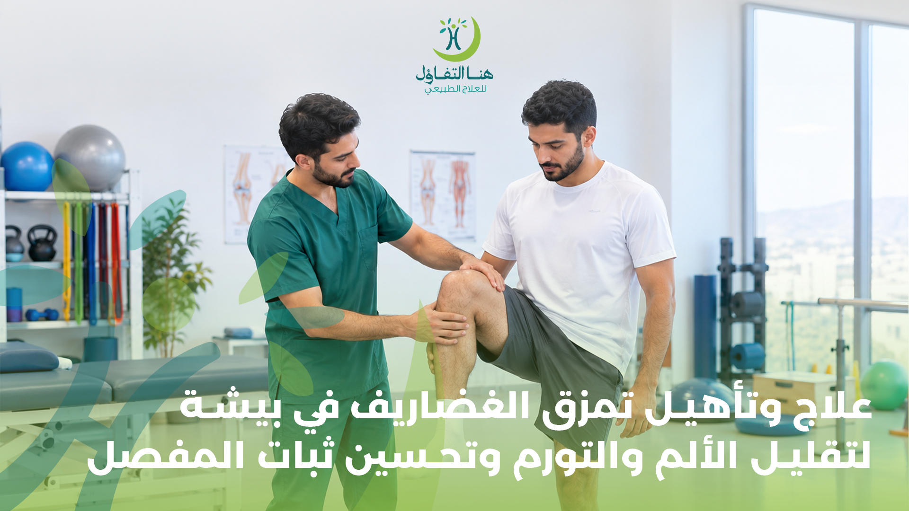

تُعد إصابات الغضاريف من المشكلات التي يمكن أن تؤثر على حركة المفصل وقدرته على تحمل الأنشطة اليومية والرياضية. وتظهر هذه الإصابات بصورة شائعة في مفصل الركبة، وخاصة إصابات الغضروف الهلالي (Meniscus)، الذي يوجد بين عظام الركبة ويساعد على امتصاص الصدمات وتوزيع الأحمال والمساهمة في استقرار المفصل.
وقد يحدث تمزق الغضروف نتيجة إصابة مفاجئة، مثل الالتواء القوي للركبة أثناء ممارسة الرياضة، كما يمكن أن تحدث بعض التغيرات التنكسية في الغضروف مع التقدم في العمر.
ولا يعني وجود تمزق في الغضروف بالضرورة أن الجراحة هي الخيار الوحيد؛ فاختيار العلاج يعتمد على نوع التمزق وحجمه ومكانه والأعراض التي يسببها وحالة المفصل بشكل عام. وفي العديد من الحالات يمكن أن يكون العلاج المحافظ والتأهيل بالعلاج الطبيعي جزءًا أساسيًا من الخطة العلاجية.
ما هو الغضروف الهلالي في الركبة؟
تحتوي كل ركبة على غضروفين هلاليين، أحدهما في الجانب الداخلي والآخر في الجانب الخارجي من المفصل.
وتعمل هذه الغضاريف كوسائد بين عظام الركبة، وتساهم في:
- امتصاص جزء من الصدمات.
- توزيع الأحمال على المفصل.
- دعم استقرار الركبة.
- تسهيل الحركة.
- المساعدة على حماية الأسطح المفصلية.
وعند حدوث إصابة في الغضروف الهلالي قد تظهر أعراض مختلفة حسب طبيعة التمزق ومكانه وشدته.
أسباب تمزق الغضاريف
يمكن أن يحدث تمزق الغضروف بسبب إصابة مباشرة أو حركة مفاجئة تؤدي إلى تحميل زائد على الركبة.
ومن الأسباب الشائعة:
- الالتواء المفاجئ للركبة.
- تغيير الاتجاه بسرعة أثناء ممارسة الرياضة.
- الدوران أثناء تثبيت القدم على الأرض.
- السقوط أو التعرض لضربة على الركبة.
- الحركات الرياضية المتكررة.
- بعض التغيرات التنكسية المرتبطة بالعمر.
- إجهاد المفصل مع وجود تغيرات سابقة في الغضروف.
وتظهر التمزقات الحادة بصورة شائعة أثناء الرياضات التي تتطلب الدوران وتغيير الاتجاه مثل كرة القدم والرياضات المشابهة. كما توجد تمزقات تنكسية قد تحدث دون إصابة واحدة واضحة، خصوصًا مع التقدم في العمر.
أعراض تمزق غضروف الركبة
تختلف أعراض تمزق الغضروف من شخص إلى آخر، وقد تكون بسيطة ومتقطعة أو واضحة ومستمرة.
ومن أكثر الأعراض شيوعًا:
- ألم في الركبة.
- ألم على خط المفصل.
- تورم حول الركبة.
- تيبس المفصل.
- صعوبة في ثني الركبة أو فردها.
- الشعور بفرقعة أو طقطقة أثناء الحركة.
- الشعور بأن الركبة لا تثبت بشكل جيد.
- صعوبة في بعض الحركات اليومية.
- ألم عند الحركات الالتوائية.
- الإحساس بأن الركبة تعلق أو تنغلق في بعض الحالات.
وقد لا يظهر التورم مباشرة بعد الإصابة، بل يمكن أن يبدأ بعد عدة ساعات أو حتى أيام.
هل كل ألم في الركبة يعني وجود تمزق في الغضروف؟
لا.
ألم الركبة يمكن أن ينتج عن أسباب متعددة، منها إصابات الأربطة أو الأوتار أو العضلات أو خشونة المفصل أو مشكلات أخرى داخل الركبة.
كما أن وجود تغير في الغضروف في التصوير لا يعني بالضرورة أنه السبب المباشر للألم، لذلك يعتمد تقييم الحالة على الأعراض والفحص السريري والتاريخ المرضي، وقد يتم استخدام التصوير مثل الرنين المغناطيسي عندما تكون هناك حاجة لتقييم الأنسجة الداخلية للركبة.
ولهذا من الأفضل عدم الاعتماد على نتيجة الأشعة وحدها عند تحديد الخطة العلاجية.
درجات وأنواع تمزق الغضاريف
لا يوجد شكل واحد لتمزق الغضروف، وتختلف الإصابة من حالة لأخرى.
تمزق صغير ومحدود
قد يكون التمزق صغيرًا ومحدودًا، مع أعراض بسيطة يمكن السيطرة عليها.
مرتبط بإصابة رياضية مفاجئة
ينتج عن حركة التواء أو دوران مفاجئ أثناء النشاط الرياضي.
ناتج عن تغيرات تنكسية
يحدث مع التقدم في العمر دون إصابة واضحة، وقد يكون مصحوبًا بخشونة المفصل.
مصحوب بمشكلات واضحة في الحركة
قد يؤثر على ثبات الركبة أو قدرتها على أداء وظيفتها بشكل طبيعي.
كما أن مكان التمزق يؤثر على احتمالية التئامه وطريقة التعامل معه، لأن أجزاء الغضروف لا تتمتع بنفس مستوى إمداد الدم. ولذلك يتم تحديد الخطة وفق طبيعة الإصابة وليس بناءً على وجود كلمة "تمزق" في تقرير الأشعة فقط.
علاج تمزق الغضاريف بدون جراحة
في بعض حالات تمزق الغضروف، وخاصة عندما تكون الأعراض محدودة ولا توجد مشكلات ميكانيكية شديدة في الركبة، يمكن أن يكون العلاج غير الجراحي خيارًا مناسبًا.
وقد يتضمن:
- تعديل الأنشطة التي تزيد الأعراض.
- التعامل مع الألم والتورم.
- استعادة حركة الركبة.
- تقوية العضلات المحيطة بالمفصل.
- تحسين التحكم في الركبة.
- زيادة القدرة على تحمل الأحمال تدريجيًا.
- العودة التدريجية إلى النشاط.
ملاحظة:
تشير إرشادات طبية إلى أن العلاج الطبيعي يمكن أن يساعد في تقليل الألم وتحسين الحركة والقوة لدى بعض المصابين بتمزق الغضروف الهلالي، بينما قد تحتاج بعض الإصابات الشديدة أو المصحوبة بأعراض معينة إلى تقييم جراحي.
دور العلاج الطبيعي في تأهيل تمزق الغضاريف
العلاج الطبيعي لا يهدف بالضرورة إلى "إصلاح التمزق" نفسه في كل الحالات، وإنما يركز بصورة أساسية على تحسين وظيفة الركبة وتقليل تأثير الإصابة على الحركة والنشاط.
تحسين مدى حركة الركبة
يعمل المعالج على مساعدة المريض في استعادة القدرة على ثني وفرد الركبة بصورة تدريجية ومناسبة للحالة.
تقوية العضلات
قد يؤدي الألم إلى ضعف العضلات المحيطة بالركبة، لذلك تمثل استعادة القوة جزءًا مهمًا من التأهيل.
تحسين التحكم في المفصل
يساعد تدريب العضلات والتحكم الحركي على تحسين طريقة استخدام الركبة أثناء الوقوف والمشي والحركة.
تحسين القدرة على تحمل الأحمال
يتم رفع مستوى التمارين تدريجيًا حتى تتمكن الركبة من تحمل متطلبات الحياة اليومية أو النشاط الرياضي.
العودة التدريجية للنشاط
عند الرياضيين، لا تكون العودة إلى النشاط مجرد اختفاء الألم، بل تحتاج إلى استعادة القوة والحركة والقدرة الوظيفية المطلوبة للنشاط الذي يمارسونه.
وتوضح المصادر الطبية أن التمارين في إصابات الغضروف الهلالي تساعد على الحفاظ على قوة العضلات ومدى حركة الركبة والتحكم فيها، وتحسين الوظيفة والتوازن.
مراحل تأهيل تمزق غضروف الركبة
يختلف البرنامج من حالة إلى أخرى، لكن يمكن أن يمر التأهيل بصورة عامة بعدة مراحل.
المرحلة الأولى: السيطرة على الأعراض
في بداية الإصابة يكون الهدف تقليل الأنشطة التي تزيد الألم والتعامل مع التورم والحفاظ على المفصل في وضع يسمح بالتعافي.
في الإصابات الحديثة، قد يُنصح بالراحة النسبية والثلج والضغط ورفع الساق، مع تجنب الأنشطة التي تزيد الأعراض. كما توصي بعض الإرشادات بعدم إيقاف حركة الركبة تمامًا لفترات طويلة، بل العودة إلى الحركات اللطيفة تدريجيًا عندما تسمح الحالة.
المرحلة الثانية: استعادة الحركة
بعد السيطرة على الأعراض يبدأ العمل على استعادة حركة الركبة تدريجيًا.
وقد تشمل التمارين حركات بسيطة للثني والفرد حسب قدرة المريض وتوصيات المعالج.
المرحلة الثالثة: تقوية العضلات
يبدأ التركيز على عضلات الفخذ والعضلات المحيطة بالركبة والورك والساق، مع اختيار التمارين وفق حالة المفصل.
ومن أمثلة التمارين التي قد تدخل في برامج تأهيل الركبة بحسب الحالة: شد عضلة الفخذ، رفع الساق بشكل مستقيم، تمارين عضلات الورك، تمارين الجسر، تمارين المقاومة التدريجية.
المرحلة الرابعة: استعادة الوظيفة
بعد تحسن الحركة والقوة، يمكن الانتقال إلى تمارين أقرب إلى الأنشطة اليومية مثل: صعود ونزول الدرج، المشي لفترات أطول، الجلوس والقيام، التحكم في حركة الركبة، تمارين التوازن.
المرحلة الخامسة: العودة إلى الرياضة
بالنسبة للرياضيين، يمكن إدخال تدريبات أكثر تخصصًا تدريجيًا، مثل الجري وتغيير الاتجاه والتمارين الخاصة بالرياضة، وفق حالة الركبة ومستوى التعافي.
تمارين علاج تمزق غضروف الركبة
تختلف التمارين المناسبة حسب نوع التمزق ومرحلة الإصابة، لذلك لا ينبغي التعامل مع قائمة تمارين جاهزة باعتبارها برنامجًا مناسبًا للجميع.
تمارين تنشيط عضلة الفخذ
تساعد على إعادة تنشيط عضلات الفخذ التي قد تضعف نتيجة الألم وقلة الحركة.
رفع الساق المستقيمة
يمكن استخدامه في بعض مراحل التأهيل لتقوية العضلات مع الحفاظ على الركبة في وضع محدد.
تمارين ثني الركبة
تستخدم لاستعادة مدى الحركة بصورة تدريجية عندما تكون مناسبة للحالة.
تمارين الجسر
يمكن أن تساعد في تقوية عضلات الورك والفخذ وتحسين التحكم بالطرف السفلي.
تمارين المقاومة
تتم إضافتها تدريجيًا مع تحسن القوة والقدرة على تحمل الحمل.
تنبيه:
إذا تسبب تمرين معين في زيادة الألم أو التورم، فلا ينبغي الاستمرار فيه بشكل عشوائي؛ يجب تعديل البرنامج وفق تقييم المختص.
علاج تمزق الغضروف الهلالي عند الرياضيين
إصابات الغضروف الهلالي شائعة بين الرياضيين الذين يمارسون الأنشطة التي تتضمن الالتواء وتغيير الاتجاه.
وقد يحتاج الرياضي إلى برنامج مختلف عن الشخص الذي يرغب فقط في العودة إلى المشي والأنشطة اليومية.
فقد يتضمن التأهيل الرياضي:
- • استعادة مدى الحركة.
- • تقوية عضلات الفخذ.
- • تقوية عضلات الورك.
- • تحسين التوازن.
- • تدريب التحكم في الركبة.
- • تدريبات الجري التدريجي.
- • تدريبات تغيير الاتجاه.
- • تدريبات خاصة بالرياضة.
- • زيادة الحمل التدريبي تدريجيًا.
والهدف هو الوصول إلى مستوى وظيفي يسمح بالعودة إلى النشاط بصورة أكثر أمانًا، وليس مجرد التخلص من الألم.
تأهيل الغضروف بعد عملية المنظار
في بعض حالات تمزق الغضروف قد يتم اللجوء إلى منظار الركبة لإصلاح الغضروف أو التعامل مع الجزء المتضرر، ويختلف برنامج التأهيل بعد العملية حسب نوع الإجراء الذي تم إجراؤه.
وهنا تصبح تعليمات الطبيب والجراح وأخصائي العلاج الطبيعي مهمة للغاية، لأن بعض عمليات إصلاح الغضروف قد تتطلب قيودًا محددة على تحميل الوزن أو مدى الحركة خلال الفترة الأولى.
بعد إصلاح الغضروف، يمكن أن يتضمن التأهيل مراحل لاستعادة:
- • مدى حركة الركبة.
- • قدرة العضلات على الانقباض.
- • القوة.
- • المشي.
- • التوازن.
- • الوظيفة الطبيعية للطرف.
وتوضح برامج إعادة التأهيل بعد إصلاح الغضروف أن التمارين ومدى الحركة وتحميل الوزن تختلف حسب الإجراء الجراحي وتعليمات الفريق المعالج.
الفرق بين علاج تمزق الغضروف قبل وبعد الجراحة
قبل الجراحة
قد يركز العلاج الطبيعي على:
- تقليل الألم والتورم.
- الحفاظ على الحركة.
- تقوية العضلات.
- تحسين وظيفة الركبة.
- معرفة مدى استجابة الحالة للعلاج المحافظ.
بعد الجراحة
يركز التأهيل على:
- اتباع القيود التي يحددها الجراح.
- استعادة الحركة تدريجيًا.
- إعادة تنشيط العضلات.
- استعادة القوة.
- تحسين المشي.
- الانتقال التدريجي للأنشطة.
ولهذا لا ينبغي تطبيق برنامج تأهيل ما بعد الجراحة على شخص لم يخضع للعملية، أو العكس، لأن احتياجات كل مرحلة تختلف.
هل كل تمزق غضروفي يحتاج إلى عملية؟
لا.
بعض حالات تمزق الغضروف تتحسن بالعلاج المحافظ وإعادة التأهيل، خصوصًا عندما تكون الأعراض قابلة للتحكم ولا توجد مشكلة ميكانيكية شديدة في الركبة.
وفي المقابل، قد تحتاج بعض الحالات إلى تقييم جراحي، خاصة عندما تكون الأعراض شديدة أو توجد مشكلة مستمرة في حركة الركبة أو قفل مؤلم للمفصل أو عندما لا يتحسن المريض بالخيارات غير الجراحية المناسبة.
لذلك لا يمكن تحديد الحاجة للجراحة اعتمادًا على كلمة "تمزق" وحدها.
متى يكون تمزق الغضروف بحاجة إلى تقييم طبي سريع؟
هناك أعراض لا يفضل تجاهلها، خاصة بعد إصابة قوية.
ومنها:
- عدم القدرة على المشي أو تحميل الوزن على الركبة.
- عدم القدرة على ثني الركبة أو فردها.
- ألم شديد بعد إصابة أو سقوط.
- تورم شديد.
- سخونة واحمرار حول الركبة مع ارتفاع الحرارة.
- قفل الركبة وعدم القدرة على تحريكها.
- زيادة الأعراض بصورة واضحة.
تنبيه هام:
توصي الجهات الطبية بالحصول على تقييم عاجل عند عدم القدرة على تحميل الوزن أو عند عدم القدرة على تحريك الركبة أو وجود ألم شديد بعد إصابة.
مدة التعافي من تمزق الغضاريف
من الصعب تحديد مدة واحدة للتعافي، لأن الفترة تختلف حسب:
- نوع التمزق.
- مكانه.
- حجمه.
- عمر المريض.
- مستوى النشاط.
- وجود إصابات أخرى.
- وجود خشونة أو مشكلات أخرى في الركبة.
- الاستجابة للعلاج الطبيعي.
- الالتزام بالبرنامج التأهيلي.
بعض إصابات الغضروف الهلالي قد تتحسن تدريجيًا خلال عدة أشهر، بينما قد تحتاج حالات أخرى إلى فترة أطول، خاصة عندما تكون الإصابة أكثر تعقيدًا أو بعد الجراحة. وتشير بعض إرشادات التأهيل إلى أن التحسن قد يستغرق نحو 3 إلى 6 أشهر في بعض الحالات غير الجراحية، مع اختلاف المدة من شخص إلى آخر.
لذلك من الأفضل تقييم التقدم بناءً على تحسن الحركة والقوة والوظيفة، وليس على مرور عدد محدد من الأيام فقط.
هل يمكن ممارسة الرياضة مع تمزق الغضروف؟
يعتمد ذلك على شدة الإصابة والأعراض ونوع الرياضة.
خلال المراحل التي تكون فيها الركبة مؤلمة أو متورمة، قد تحتاج إلى تقليل الأنشطة التي تزيد الحمل على المفصل، خصوصًا:
- الجري.
- القفز.
- تغيير الاتجاه المفاجئ.
- الدوران على الركبة.
- القرفصاء العميق.
- الأنشطة عالية التأثير.
ثم تتم العودة إلى النشاط بصورة تدريجية مع تحسن الحالة واستعادة القوة والحركة والتحكم.
ولا يُنصح بالعودة المفاجئة إلى التدريبات الشديدة بمجرد انخفاض الألم.
أخطاء قد تؤثر على تأهيل تمزق الغضاريف
تجاهل الألم المستمر
استمرار الألم أو زيادة الأعراض مع النشاط قد يشير إلى الحاجة إلى إعادة تقييم الخطة.
العودة السريعة للرياضة
العودة قبل استعادة القوة والتحكم والحركة قد تجعل الركبة غير جاهزة للأحمال العالية.
إيقاف الحركة تمامًا لفترة طويلة
الراحة قد تكون مهمة في المرحلة المبكرة، لكن بعض الإرشادات تشدد على العودة التدريجية للحركة بدلًا من إبقاء الركبة دون حركة لفترة طويلة.
ممارسة تمارين عشوائية
ليس كل تمرين مناسبًا لكل تمزق أو لكل مرحلة من مراحل التأهيل.
الاعتماد على الأشعة فقط
نتيجة الرنين أو أي تصوير يجب تفسيرها بجانب الأعراض والفحص السريري، لأن بعض التغيرات في الغضاريف قد لا تكون هي سبب الأعراض.
علاج وتأهيل تمزق الغضاريف في بيشة
في هنا التفاؤل للعلاج الطبيعي والتأهيل الطبي في بيشة يمكن التعامل مع حالات إصابات الركبة وتمزق الغضاريف من خلال برنامج تأهيلي يركز على احتياجات كل حالة.
ويهدف التأهيل إلى المساعدة في:
- • تقليل الألم.
- • التعامل مع التورم.
- • تحسين حركة الركبة.
- • استعادة قوة العضلات.
- • تحسين ثبات وتحكم المفصل.
- • تطوير القدرة على تحمل النشاط.
- • استعادة الحركة الوظيفية.
- • العودة التدريجية للأنشطة اليومية.
- • التأهيل الرياضي عند الحاجة.
ويتم تحديد طبيعة التمارين ومستوى المقاومة والتدرج بناءً على حالة المريض ومرحلة الإصابة، بدلًا من استخدام برنامج واحد لجميع الحالات.
لماذا العلاج الطبيعي مهم بعد إصابات الغضاريف؟
قد يؤدي الألم والتورم إلى تقليل استخدام الركبة، ومع قلة الحركة يمكن أن تضعف العضلات المحيطة بالمفصل وتقل القدرة على أداء بعض الحركات.
ولا يكون الهدف مجرد تحريك الركبة، وإنما الوصول إلى مستوى وظيفي أفضل يتناسب مع احتياجات الشخص، سواء كان الهدف هو المشي بصورة طبيعية أو ممارسة الأنشطة اليومية أو العودة إلى الرياضة.
الأسئلة الشائعة عن علاج وتأهيل تمزق الغضاريف
هل يمكن علاج تمزق الغضروف بالعلاج الطبيعي؟
نعم، يمكن أن يكون العلاج الطبيعي جزءًا من العلاج المحافظ لبعض حالات تمزق الغضروف، ويساعد على تحسين الحركة والقوة والوظيفة وتقليل تأثير الإصابة على النشاط. ويعتمد القرار على طبيعة التمزق والأعراض.
هل تمزق غضروف الركبة يحتاج دائمًا إلى عملية؟
لا. بعض الحالات تتحسن بالعلاج المحافظ والتأهيل، بينما تحتاج بعض الحالات الأخرى إلى تقييم جراحي وفق شدة الأعراض ونوع التمزق واستجابة الحالة للعلاج.
هل يمكن المشي مع تمزق الغضروف؟
يعتمد ذلك على شدة الإصابة. بعض الأشخاص يستطيعون المشي مع وجود أعراض، بينما قد يجد آخرون صعوبة في تحميل الوزن. إذا كنت غير قادر على المشي أو تحميل الوزن على الركبة بعد الإصابة، فمن المهم الحصول على تقييم طبي.
هل تمارين العلاج الطبيعي تصلح جميع حالات تمزق الغضاريف؟
لا. يتم اختيار التمارين وفق نوع الإصابة ومرحلة التعافي والحالة الوظيفية للمريض. وقد تكون بعض الحركات غير مناسبة في مراحل معينة، خصوصًا بعد الجراحة.
كم تستغرق فترة علاج تمزق الغضروف؟
تختلف المدة من شخص إلى آخر. بعض الحالات قد تتحسن خلال عدة أشهر، بينما تحتاج حالات أخرى إلى فترة أطول، خاصة بعد الإصلاح الجراحي أو عند وجود إصابات مصاحبة.
هل يمكن العودة إلى الرياضة بعد تمزق الغضروف؟
يمكن للعديد من الأشخاص العودة إلى النشاط الرياضي بعد التأهيل المناسب، لكن العودة يجب أن تكون تدريجية وتعتمد على استعادة الحركة والقوة والقدرة على أداء متطلبات الرياضة.
هل يمكن أن يتحسن تمزق الغضروف بدون جراحة؟
بعض الحالات يمكن أن تتحسن أعراضها ووظيفة الركبة دون جراحة من خلال العلاج المحافظ والتأهيل، لكن ذلك يعتمد على نوع التمزق ومكانه والأعراض المصاحبة.
متى يجب مراجعة الطبيب بسبب تمزق الغضروف؟
إذا كان الألم شديدًا، أو لا تستطيع المشي أو تحميل الوزن، أو لا تستطيع ثني الركبة أو فردها، أو توجد زيادة واضحة في التورم أو الأعراض، فمن الأفضل الحصول على تقييم طبي مناسب.
احجز استشارتك في مركز هنا التفاؤل ببيشة
إذا كنت تعاني من ألم أو تورم أو صعوبة في حركة الركبة بعد إصابة، أو تم تشخيصك بتمزق في الغضروف وتحتاج إلى برنامج تأهيل مناسب في بيشة، فلا تؤجل التقييم. يساعد التشخيص المبكر على وضع خطة علاجية مناسبة قد تساهم في تقليل الألم وتحسين الحركة وثبات المفصل.